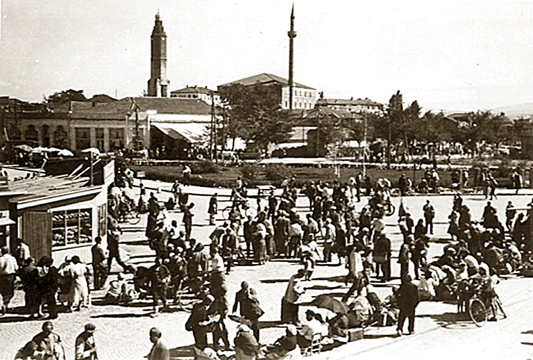
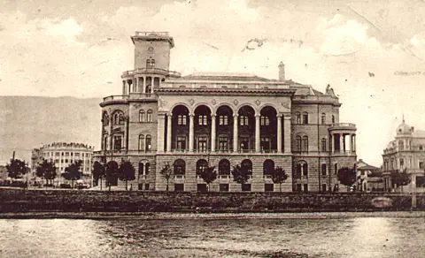

Скопье 1916 - 1917 панорама 1
Документы Балканских войн
- Год
- 1916-1917
- Продолжительность
- 00:11

Возчики на скопском рынке под городской крепостью, напротив турецкой почты. Сзади справа видны мечеть Мустафы-паши и почта. (XIX век)

Рынок в Скопье перед Хюкюматом (управой) и турецкой почтой - 1902 год. На заднем плане слева казарма. (конец XIX века)

Базарный день в Скопье перед Хюкюматом (управой) и турецкой почтой в 1902 году. Позади мечеть Мустафы-паши.

Скопский рынок под городской крепостью - XIX век.

Скопский рынок под городской крепостью - XIX век.

Возчики на городской площади - XIX век.

Рынок в Скопье перед Хюкюматом (управой) и турецкой почтой - 1902 год. На заднем плане видна казарма.

Бит-пазар, рынок сельскохозяйственных продуктов. На заднем плане мечеть Исхак-бея и тюрбе. (конец XIX, начало XX века)

Бит-пазар, конец XIX века.

Рынок в старой чаршии - конец XIX века.

Бит-пазар. На заднем плане мечеть Исхак-бея и тюрбе.
- XIX век.

Бит-пазар. На заднем плане мечеть Исхак-бея и тюрбе.
- XIX век.

Часть Бит-пазара - рынок гончарных изделий.
(начало XX века)

Горожане и крестьяне на Бит-пазаре - момент из базарных дней (начало XX века)

Продавец картофеля - момент из базарных дней
(около 1930 года)

Бит-пазар - 1920-е.

Бит-пазар - 1950-е.

Бит-пазар - 1950-е.
Документы Балканских войн
 Акведук4 открытки
Акведук4 открытки Кале30 открыток
Кале30 открыток Мосты60 открыток
Мосты60 открыток Набережная58 открыток
Набережная58 открыток Площадь46 открыток
Площадь46 открыток Здания66 открыток
Здания66 открыток Христианские храмы19 открыток
Христианские храмы19 открыток Мусульманские здания33 открытки
Мусульманские здания33 открытки
Офицерский дом29 открыток Театр28 открыток
Театр28 открыток Железнодорожный вокзал13 открыток
Железнодорожный вокзал13 открыток Школы36 открыток
Школы36 открыток Парки12 открыток
Парки12 открыток Рынки18 открыток
Рынки18 открыток Улицы38 открыток
Улицы38 открыток Панорама I60 открыток
Панорама I60 открыток Панорама II30 открыток
Панорама II30 открыток Коллажи55 открыток
Коллажи55 открыток Наводнения9 открыток
Наводнения9 открыток Землетрясение27 открыток
Землетрясение27 открыток Скопье 200026 открыток
Скопье 200026 открыток